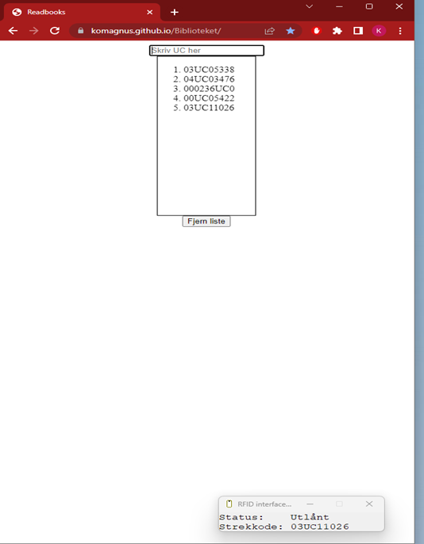
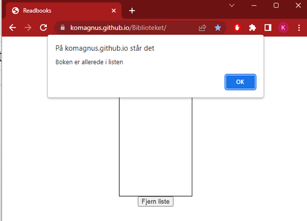
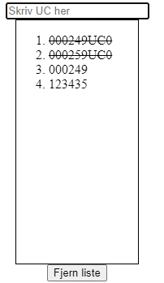

✖
Øverst på siden er det et input-felt hvor man kan skrive inn eller scanne bøker. Scanning av bøker på plate/ av strekkode legger de automatisk til i listen, og manuell skriving + enter legger til feltets innhold i listen. Dersom flere bøker legges på skanne-platen, blir alles UC-kode lagt til en gang i en liste i feltet under:
Dersom man forsøker å legge til en bok som allerede er scannet, blir det varslet:
Ved kopiering av verdien, blir det streket over hva som har blitt kopiert. Dette for å holde kontroll på hva som har blitt kassert:
Man kan tømme listen ved å enten trykke på «fjern liste» eller laste inn siden på nytt.
Slik jeg har brukt det deles skjermen i to, og verdi kopieres inn i søkerfeltet:
OBS!bruk av denne siden kan føre til latterlig rask kassering. Forskning viser at bruk av denne metoden øker hurtigheten ved kassering til oppimot 5 bøker i minuttet!